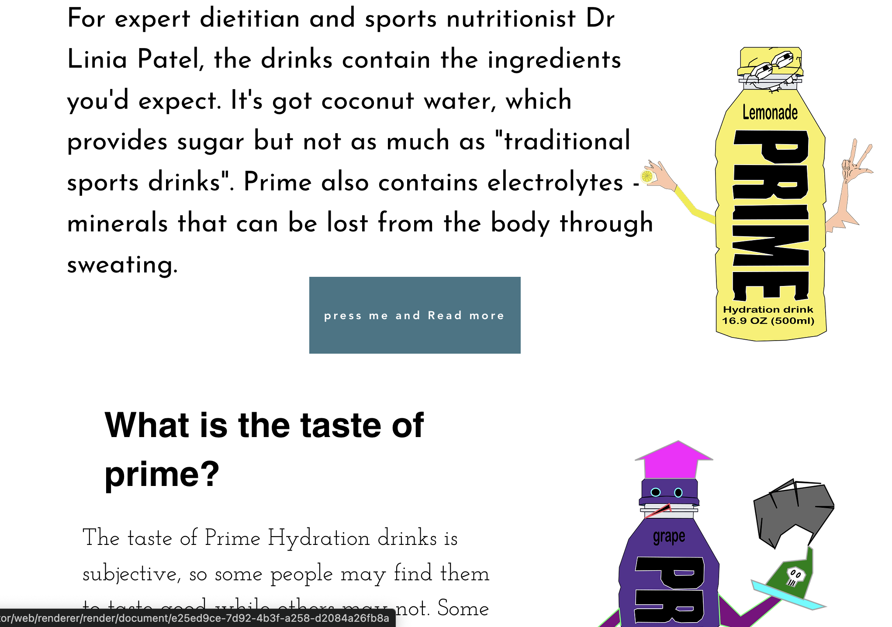
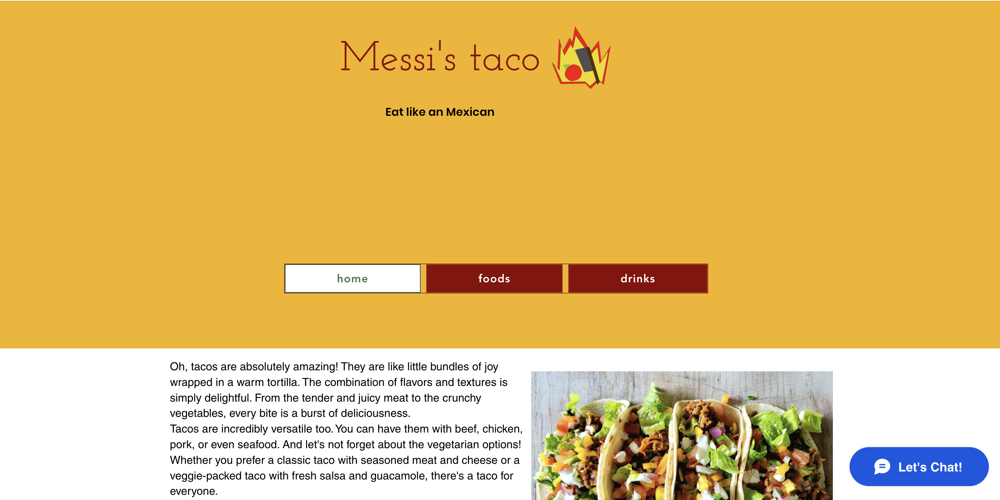

My Sites
from the Wix constructor to making pages with HTML and CSS
Website of a cattery consisting of several pages was assembled in Wix
Website of a game studio; the styles were written in the style attribute
Website of a fireworks store; CSS selectors, file with styles
Layout of a multi-page website created in Figma
Website of the Samoylov family; page making according to a layout, margins
Bonus: Website of an eSports tournament
 